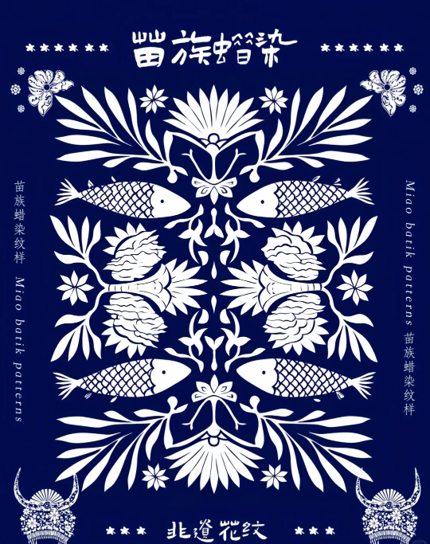

蜡染，是我国民间传统纺织印染手工艺，古称蜡缬，与绞缬（扎染）、灰缬（镂空印花）、夹缬（夹染）并称为我国古代四大印花技艺。

蜡染的核心工艺是以蜡刀蘸熔蜡在布料上绘制图案，再通过蓝靛浸染，最终形成蓝底白花或白底蓝花的独特纹样。蜡染过程中，蜡层自然龟裂产生的"冰纹"是其标志性特征，赋予每件作品独一无二的艺术效果。由于蜡染图案丰富，色调素雅，风格独特，用于制作服装服饰和各种生活实用品，显得朴实大方、清新悦目。
蜡染在贵州、云南、广西、湖南等地的苗族、瑶族、侗族等民族中尤为盛行，其中贵州丹寨苗族蜡染于2006年被列入国家级非物质文化遗产名录。蜡染以精湛工艺、纹样多样及深厚的文化内涵而著称，具有重要的历史与艺术价值。